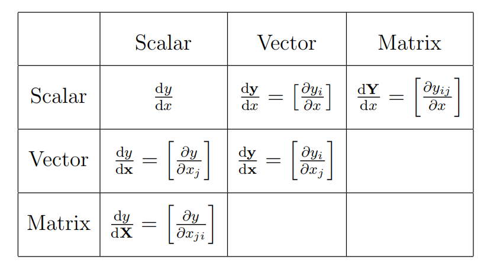
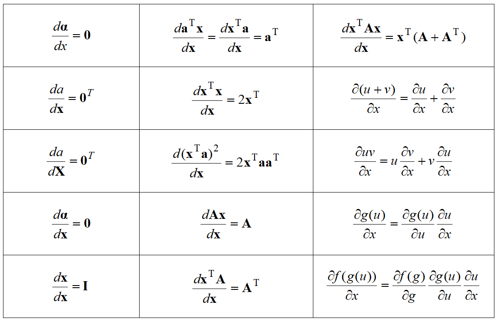
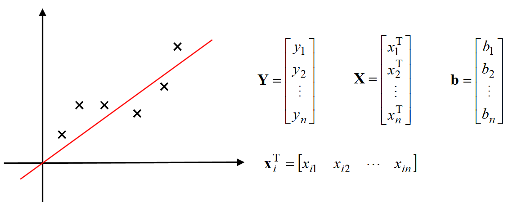

矩阵求导
写在前面
第一次接触矩阵导数是暑期课Frontier Approaches of Control Science的作业用最小二乘法做线性回归。在控制理论和机器学习领域，矩阵求导更是一个常用的数学工具。
矩阵求导的本质
矩阵A对矩阵B求导，本质上是多元函数求导，也就是矩阵A中的每一个元素对矩阵B中的每一个元素求导，再将求导的结果排列成矩阵的形式。到这里，矩阵求导似乎就讲完了，剩下的就是复合函数求导和求偏导的计算。但是我们很快就发现这种逐元素求导的方法很复杂，随着元素的增加，计算量也极大地增加。那么，有没有直接用矩阵运算，从整体出发的算法。
矩阵求导的形式
常见的矩阵求导有以下六种，分别是标量对标量求导、标量对向量求导、标量对矩阵求导、向量对标量求导、向量对向量求导和矩阵对标量求导。

两种布局
我们上面提到矩阵求导的本质是矩阵A中的每一个元素对矩阵B中的每一个元素求导，再将求导结果排列成矩阵的形式。对于两个向量的求导结果一般有两种排列方式，分别是分子布局（XY拉伸术）和分母布局（YX拉伸术）。
$\frac{\partial Y}{\partial X}$的布局规则：1.标量不变，向量拉伸 2.前面横向拉，后面纵向拉
分子布局（XY拉伸术）
对于$\frac{\partial Y}{\partial X}$，分子布局的方法是XY拉伸术。先判断X和Y是不是向量，若二者都是向量，根据布局规则，X在前所以横向拉伸，Y在后所以纵向拉伸，具体过程如下：
标量/向量（在分子布局下，Y是标量，不变；X是向量，横向拉伸）
向量/标量（在分子布局下，Y是向量，纵向拉伸；X是标量，不变）
向量/向量（在分子布局下，Y是向量，纵向拉伸；X也是向量，横向拉伸）
分母布局（YX拉伸术）
同样对于$\frac{\partial Y}{\partial X}$，分母布局的方法是YX拉伸术。若二者都是向量，根据布局规则，Y在前所以横向拉伸，X在后所以纵向拉伸，具体过程如下：
标量/向量（在分母布局下，Y是标量，不变；X是向量，纵向拉伸）
向量/标量（在分母布局下，Y是向量，横向拉伸；X是标量，不变）
向量/向量（在分母布局下，Y是向量，横向拉伸；X也是向量，纵向拉伸）
分子布局和分母布局互为转置的关系：
- (分子布局)$^{T}$=分母布局
- (分母布局)$^{T}$=分子布局
在控制理论等领域的雅可比矩阵采用的是分子布局
在机器学习的梯度矩阵中采用的是分母布局
常用的公式
（a, a, A分别是与标量x和向量x无关的标量、向量和矩阵）

最小二乘法
这里利用最小二乘法的例子来演示矩阵的整体求导。

损失函数定义为y的实际值与拟合曲线对应值之差的平方：
用矩阵表示为：
要找到一组系数向量b使得损失函数最小，将损失函数对b求导：
得到